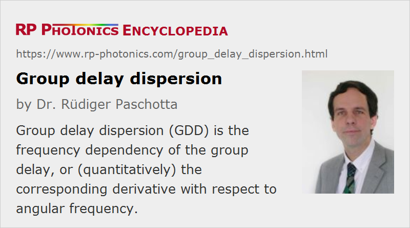

Group Delay Dispersion
Acronym: GDD
Definition: the frequency dependency of the group delay, or (quantitatively) the corresponding derivative with respect to angular frequency
German: Gruppenverzögerungsdispersion
Categories: general optics, light pulses
Formula symbol: D2
Units: s2
How to cite the article; suggest additional literature
Author: Dr. Rüdiger Paschotta
The group delay dispersion (also sometimes called second-order dispersion) of an optical element is the derivative of the group delay with respect to the angular frequency, or the second derivative of the change in spectral phase:
It is usually specified in fs2 or ps2. Positive (negative) values correspond to normal (anomalous) chromatic dispersion. For example, the group delay dispersion of a 1-mm thick silica plate is +35 fs2 at 800 nm (normal dispersion) or −26 fs2 at 1500 nm (anomalous dispersion). Another example is given in Figure 1.
If an optical element has only second order dispersion, i.e., a frequency-independent D2 value, its effect on an optical pulse or signal can be described as a change of the spectral phase:
where ω0 is the angular frequency at the center of the spectrum.
Note that the group delay dispersion (GDD) always refers to some optical element or to some given length of a medium (e.g. an optical fiber). The GDD per unit length (in units of s2/m) is the group velocity dispersion (GVD).
Questions and Comments from Users
Here you can submit questions and comments. As far as they get accepted by the author, they will appear above this paragraph together with the author’s answer. The author will decide on acceptance based on certain criteria. Essentially, the issue must be of sufficiently broad interest.
Please do not enter personal data here; we would otherwise delete it soon. (See also our privacy declaration.) If you wish to receive personal feedback or consultancy from the author, please contact him e.g. via e-mail.
By submitting the information, you give your consent to the potential publication of your inputs on our website according to our rules. (If you later retract your consent, we will delete those inputs.) As your inputs are first reviewed by the author, they may be published with some delay.
Bibliography
| [1] | K. Naganuma et al., “Group-delay measurement using the Fourier transform of an interferometric cross correlation generated by white light”, Opt. Lett. 15 (7), 393 (1990), doi:10.1364/OL.15.000393 |
| [2] | A. P. Kovacs et al., “Group-delay measurement on laser mirrors by spectrally resolved white-light interferometry”, Opt. Lett. 20 (7), 788 (1995), doi:10.1364/OL.20.000788 |
| [3] | S. Diddams and J.-C. Diels, “Dispersion measurements with white-light interferometry”, J. Opt. Soc. Am. B 13 (6), 1120 (1996), doi:10.1364/JOSAB.13.001120 |
| [4] | A. Gosteva et al., “Noise-related resolution limit of dispersion measurements with white-light interferometers”, J. Opt. Soc. Am. B 22 (9), 1868 (2005), doi:10.1364/JOSAB.22.001868 |
| [5] | T. V. Amotchkina et al., “Measurement of group delay of dispersive mirrors with white-light interferometer”, Appl. Opt. 48 (5), 949 (2009), doi:10.1364/AO.48.000949 |
See also: chromatic dispersion, group velocity dispersion, group delay
and other articles in the categories general optics, light pulses
|  |
If you like this page, please share the link with your friends and colleagues, e.g. via social media:
These sharing buttons are implemented in a privacy-friendly way!